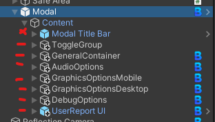
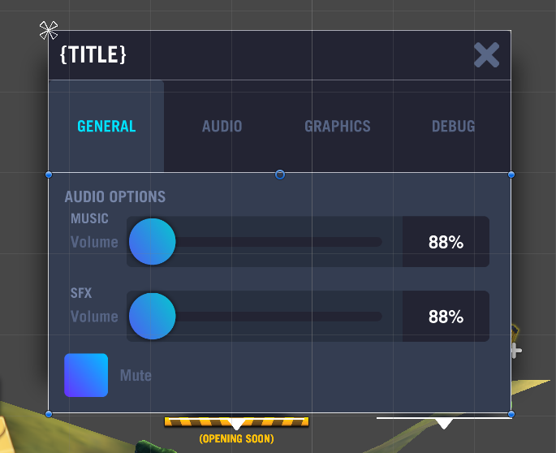
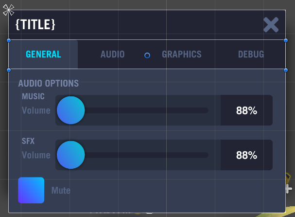

Modals
There are multiple types of modals which slightly differ in their core behaviour but all extend from the ModalBase.cs class.
Stacking
Modal stacking logic is handled automatically by the ModalManger singleton. Last modal that was opened will be the top modal in focus.
Generic Modals
In the scenes hierarchy generic modals are a child of the Modal Manager's scroll rect container. The scrolling logic is handled automatically. A developer can define a default width and pivot based on options provided in the inspector.
Prefabs
All generic modals need to be a variant of Modal prefab. You can remove the Modal component on it to extend the modals behaviour with a custom class. e.g public class ConfirmationModal : Modal
Note: As of writing this not all modals are prefab variants of the Modal prefab as are using the legacy ModalContent behaviour. This will eventually be phased out.
Pivot
Generic modal pivots will always be based on centre screen in the x axis. The y axis pivot can be either top (1), or centre (0.5).
Width
The width is predefined by platform type. However, this can be overridden in code or from the inspector.
Generic Modal Types
- Prompt Modal
- Its height can be predetermined and wont be changed after showing. i.e it doesn't have tabs which can alter its height.
- Will always be anchored centre screen with a centre pivot point.
- Rich modal
- Height can be changed after showing. Maybe be because of tabs or dynamically added list items etc.
- Anchored towards top of screen with pivot centre top. This allows the content to dynamically change height without the top bar of the modal changing position on screen.
Overlay Modal Types
Overlay modals are NOT a child of the ModalManager's scroll rect container. Therefore they are considered rogue and their behaviour require specific case by case logic than generic behviours. These modals NEED their own scroll rects internally if scrolling is expected.
- Overlay Modal
- can pivot to left/right side of screens
- Full Screen Modal
- Exclusively a full screen modal
Modal Content Panel
A key aspect of maintain a smooth tween with modals when resizing is the use of ModalContentPanel.cs. It implements ILayoutSelfController which is what ContentSizeFitter uses. So the script can be considered a ContentSizeFitter that only works vertically and should only be used for Modals. However, this script could be used in other areas as well though its behaviour may vary and is not supported.
Each panel that is dynamically toggled needs to use a ModalContentPanel script attached. These panels communicate directly with Modal.cs which figures out what size it needs to tween to. Rich modals MUST content this script however prompt modals don't really need it since content is static.
Max Height
I found it useful for User Report panel in SettingsModal which was infinitely growing in height but it didn't have any layout groups as children so I couldn't really work out why it was infinitely growing in height. Probably due to the way Unity's UI updates in the hierarchy. This solved that issue anyway.
Rich modal hierarchy structure

The key thing to note with Modal Content Panel is there are some rules to follow:
- Never use
ModalContentPanel.gameObject.SetActive()in code or from inspector. UseModalContentPanel.SetVisibility()explicitly. LayoutGroup's vertical and horizontal need to haveChild Force Expand Heightset tofalse(unchecked)LayoutElement's maybe needFlexible Heightset to0
The above rules are because of some height issues/bugs that I've experienced:
- Panel height grows infinitely (Child Force Expand false solves that)
- Children expand unwantedly (Flexible Height 0 solves that)
Child panels that will always be showing like ToggleGroup or Modal Title Bar seen in above image don't need anything done to them. However I found setting those layout rules to them does help with unwanted expanding
Unwanted expanding example
This is an example where the toggle group Flexible Height is NOT set to 0

Here is the same modal but Flexible Height is set to 0

Modal Manager
// TODO